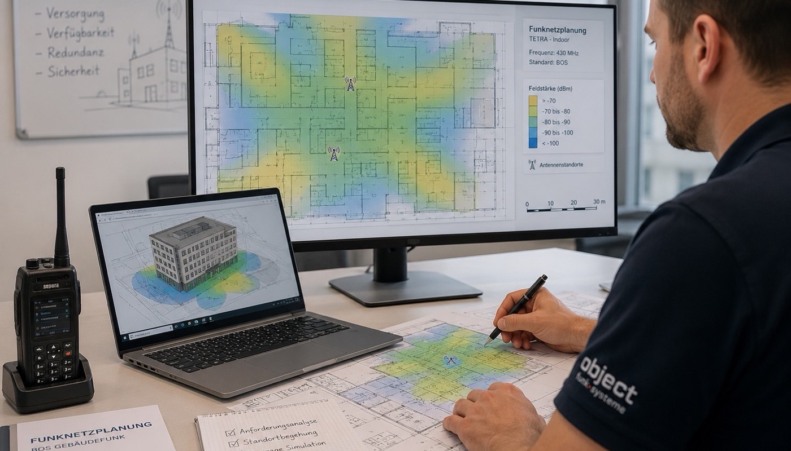

Viele Bauherren und Generalunternehmer betrachten die BOS-Objektfunkanlage als ein notwendiges Übel: eine Pflichtauflage der Feuerwehr, die möglichst günstig abgearbeitet werden soll. Diese Perspektive kostet in der Praxis fast immer mehr als eine sorgfältige Planung – durch Nachrüstungen, verweigerte Abnahmen oder überdimensionierte Anlagen, die niemand gebraucht hätte.
Dieser Artikel erklärt, was professionelle BOS-Funknetzplanung ausmacht, welche ingenieurtechnischen Entscheidungen in der Planungsphase fallen, warum diese Entscheidungen die späteren Kosten maßgeblich bestimmen – und wie erfahrene Fachleute dabei systematisch besser planen als jemand, der eine BOS-Anlage zum ersten Mal realisiert.

Warum die Planungsphase die teuerste oder die sparsamste Phase ist
Eine BOS-Objektfunkanlage ist kein Standardprodukt, das man aus dem Katalog bestellt. Jedes Gebäude hat eine andere Grundrissgeometrie, andere Baumaterialien, andere Tiefenstrukturen und eine andere Ausgangssituation hinsichtlich des vorhandenen BOS-Funksignals. Die Anlage muss für dieses Gebäude geplant werden.
Der entscheidende Zusammenhang: Fehler in der Planungsphase werden in der Installationsphase teuer. Wer die Repeateranzahl zu niedrig ansetzt, braucht Nachrüstungen. Wer Kabelwege nicht sorgfältig plant, reißt bereits verputzte Wände auf. Wer die lokalen Anforderungen der Feuerwehr nicht kennt, erlebt eine verweigerte Abnahme. In allen drei Fällen zahlt der Auftraggeber doppelt – für die Korrektur und für den Zeitverzug.
Umgekehrt gilt: Eine präzise Planung legt von Anfang an fest, welche Komponenten wirklich nötig sind, wo Kabel verlegt werden müssen und wie die Anlage in einem Zug zur Abnahme gebracht werden kann. Das spart Materialkosten, Installationszeit und Behördenkommunikation.
Was umfasst BOS-Funknetzplanung konkret?
BOS-Funknetzplanung ist weit mehr als das Einzeichnen von Repeatern in einen Grundriss. Professionelle Planung umfasst mehrere ingenieurtechnische Disziplinen, die ineinandergreifen müssen:
1. Analyse der Ausgangssituation
Basis jeder Planung ist die Kenntnis der realen Funksituation. Das schließt die Auswertung vorhandener Erforderlichkeitsmessungen, die Bewertung der Gebäudestruktur (Baumaterialien, Wandstärken, Geschossigkeit) und die Abstimmung mit den örtlichen Anforderungen der Feuerwehr ein. Was die Hamburger Feuerwehr fordert, kann von den Vorgaben in München abweichen – ein Planer ohne lokale Erfahrung bemerkt das oft zu spät.
2. Funkfeldplanung und Ausbreitungsberechnung
Auf Basis der Gebäudedaten wird rechnerisch ermittelt, wie sich das Funksignal innerhalb des Gebäudes ausbreitet. Dabei fließen Dämpfungswerte der Baumaterialien, Reflexionen und geometrische Besonderheiten (Treppenhäuser, Aufzugsschächte, unterirdische Ebenen) ein. Das Ergebnis ist eine simulierte Versorgungskarte, die zeigt, wo ohne Anlage Funklöcher entstehen – und wie viele und welche Komponenten zur vollständigen Abdeckung erforderlich sind.
3. Pegelplanung (Systemkalkulation)
Die Pegelplanung bestimmt die Signalstärken an jedem Punkt der Anlage: von der Außenantenne über den Repeater, durch das Kabel, über Koppler und Verteiler bis zur letzten Innenantenne. Jedes Bauteil hat eine definierte Verstärkung oder Dämpfung – die Gesamtkette muss so ausgelegt sein, dass an jedem Messpunkt die Mindestfeldstärke gemäß DIN 14024 sicher erreicht wird, ohne einzelne Bereiche zu überversorgen.
4. Komponentenauswahl und Systemauslegung
Auf Basis der Pegelplanung werden Repeater, Antennentypen, Kabelquerschnitte, Koppler und Verteiler ausgewählt. Dabei zählt nicht nur das technische Optimum, sondern auch die Wirtschaftlichkeit: Ein Repeater mit höherer Ausgangsleistung kann manchmal zwei kleinere Einheiten ersetzen – was Installations- und Wartungsaufwand halbiert.
5. Kabelwege und Infrastrukturplanung
Die Route jedes Kabels wird im Grundriss festgelegt – unter Berücksichtigung vorhandener Kabeltrassen, brandschutzrelevanter Abschnitte, Decken- und Wanddurchführungen. Wer diese Planung überspringt, verlegt Kabel auf dem kürzesten Weg – und bemerkt erst bei der Installation, dass dieser Weg durch eine F90-Wand führt oder mit anderen Gewerken kollidiert.
6. Redundanz- und Ausfallsicherheitsplanung
DIN 14024 fordert, dass die Anlage bei Netzausfall mindestens 30 Minuten betriebsbereit bleibt. Die Auslegung der Akkupuffer, die Dimensionierung der Ladeeinheiten und die Überwachungsarchitektur müssen geplant sein, bevor das erste Bauteil bestellt wird.
7. Abstimmung mit Feuerwehr und Behörden
Professionelle Planung endet nicht am Schreibtisch. Sie schließt die frühzeitige Abstimmung des Systemkonzepts mit der zuständigen Feuerwehr oder dem Stadtfeuerwehrverband ein. So werden Anforderungen, die nur mündlich kommuniziert werden oder nicht schriftlich fixiert sind, rechtzeitig erfasst – und nicht erst bei der Abnahme zum Problem.
Was fordert DIN 14024 von der Planungsdokumentation?
Die Norm schreibt nicht nur vor, was eine BOS-Anlage leisten muss – sie legt auch fest, wie die Planung zu dokumentieren ist. Eine unvollständige oder nicht normkonforme Planungsdokumentation kann dazu führen, dass die Anlage bei der behördlichen Abnahme durchfällt, auch wenn sie technisch einwandfrei funktioniert.
| Dokumentationselement | Was es zeigen muss |
|---|---|
| Systemschema | Vollständige Darstellung aller Komponenten mit Bezeichnung, Versorgungspegel und Verbindungen |
| Pegelplan | Berechnete Signalpegel an jedem relevanten Punkt der Anlage – Nachweis der Normerfüllung vor der Installation |
| Grundrisspläne mit Komponentenverortung | Exakte Position aller Repeater, Antennen, Verteiler und Kabeltrassen je Geschoss |
| Komponentenliste mit Zulassungsnachweisen | Alle eingesetzten Bauteile müssen für BOS-Anwendungen zugelassen sein – Nachweis durch Typzulassung |
| Redundanzkonzept | Nachweis der 30-minütigen Notstromversorgung und der Überwachungsfunktionen |
| Abstimmungsnachweis Feuerwehr | Dokumentation der behördlichen Vorabstimmung – in vielen Bundesländern Pflichtbestandteil |
Diese Dokumentation wird bei der Abnahme vollständig geprüft. Fehlt ein Element oder ist es nicht normenkonform erstellt, wird die Abnahme verweigert – unabhängig davon, wie gut die Anlage tatsächlich funktioniert.
Die häufigsten Planungsfehler – und was sie kosten
In der Praxis entstehen Mehrkosten durch eine überschaubare Anzahl wiederkehrender Fehler. Wer sie kennt, kann sie gezielt vermeiden:
Fehler 1: Planung ohne Erforderlichkeitsmessung
Wer eine Anlage plant, ohne vorher die tatsächliche Funksituation im Gebäude zu kennen, plant im Dunkeln. Das Ergebnis ist entweder eine überdimensionierte Anlage (zu viele Komponenten, zu hohe Kosten) oder eine unterdimensionierte Anlage (Funklücken, die bei der Abnahme auffallen).
Fehler 2: Vernachlässigung lokaler Behördenanforderungen
Die DIN 14024 gibt Mindestanforderungen vor – örtliche Feuerwehren können darüber hinaus spezifische Anforderungen stellen (z.B. andere Grenzwerte, bestimmte Überwachungsschnittstellen oder Anlagentypen). Planer ohne lokale Erfahrung kennen diese Anforderungen oft nicht. Das Ergebnis: eine Anlage, die gegen die Norm hält, aber gegen die Feuerwehrvorgaben nicht.
Fehler 3: Fehlende Kabelwegplanung
Wenn Kabeltrassen erst auf der Baustelle improvisiert werden, entstehen Konflikte mit anderen Gewerken, unnötige Längen und unkontrollierte Dämpfungen. Im schlimmsten Fall müssen bereits fertiggestellte Wände und Decken wieder geöffnet werden.
Fehler 4: Falsche Komponentenwahl durch fehlende Pegelrechnung
Ohne rechnerische Pegelplanung wird die Komponentenwahl zum Ratespiel. Zu schwache Repeater erzeugen Versorgungslücken; zu starke Repeater erzeugen Überversorgung, die Interferenzen verursachen kann. Beides führt bei der Abnahmemessung zu Problemen.
Fehler 5: Planung ohne Schnittstellenkoordination
BOS-Anlagen werden in Gebäude gebaut, in denen andere Gewerke gleichzeitig arbeiten. Fehlende Abstimmung mit Elektro, HLKS und Brandschutz führt zu Konflikten, die auf der Baustelle teuer gelöst werden müssen.
Wie BESCom plant: Ingenieurarbeit, keine Schätzungen
BESCom plant BOS-Objektfunkanlagen seit über 35 Jahren – in Hochhäusern, Tiefgaragen, Krankenhäusern, Einkaufszentren und Industrieanlagen. Aus dieser Projekterfahrung ist ein Planungsansatz entstanden, der auf einem Prinzip beruht: Keine Entscheidung ohne rechnerische Grundlage.
Das bedeutet in der Praxis:
- Jede Planung beginnt mit Messdaten. BESCom führt die Erforderlichkeitsmessung selbst durch oder wertet vorliegende Messdaten aus, bevor die erste Komponente ausgewählt wird.
- Jede Anlage wird vollständig durchgerechnet. Pegelplan, Systemschema und Komponentenliste entstehen vor der Installation – nicht währenddessen.
- Jede Planung berücksichtigt die lokalen Behördenanforderungen. BESCom kennt die Anforderungen der Hamburger Feuerwehr aus Jahrzehnten direkter Zusammenarbeit – und stimmt Systemkonzepte bei Bedarf vorab ab, um Überraschungen bei der Abnahme auszuschließen.
- Kabelwege werden im Grundriss festgelegt. Nicht grob skizziert, sondern so präzise geplant, dass auf der Baustelle keine Improvisationen nötig sind.
- Komponentenwahl ist herstellerunabhängig. BESCom ist nicht an einen Hersteller gebunden. Ausgewählt wird, was für das konkrete Objekt technisch und wirtschaftlich optimal ist.
💡 Was das für Ihr Projekt bedeutet: Eine BESCom-Planung ist keine Schätzung, die auf der Baustelle korrigiert wird. Sie ist eine vollständige Ingenieurdokumentation, auf deren Basis die Installation reibungslos und in einem Zug zur Abnahme gebracht werden kann.
→ Planungsauftrag anfragen
Kosten-Nutzen: Was gute Planung konkret einspart
Die Kosten für professionelle Funknetzplanung lassen sich dem Einsparpotenzial direkt gegenüberstellen:
| Szenario | Ohne professionelle Planung | Mit professioneller Planung |
|---|---|---|
| Komponentenanzahl | Oft 20–30 % zu viele Repeater und Antennen durch konservative Überdimensionierung | Exakt das Notwendige – kein ungenutztes Material |
| Kabelverlegung | Improvisierte Trassen führen zu Mehraufwand und Konflikten mit anderen Gewerken | Trassen vorab geplant, koordiniert, störungsfrei verlegt |
| Behördenabnahme | Häufig 1–2 Nachbesserungsrunden notwendig – Zeitverzug von Wochen bis Monaten | Abnahme beim ersten Termin, vollständige Dokumentation vorliegend |
| Nachträgliche Änderungen | Kabelumverlegungen, zusätzliche Antennen, Repeater-Tausch nach Abnahmemessung | Planungskonforme Installation – keine nachträglichen Anpassungen nötig |
| Projektdauer | Verzögerungen durch Mängel, Nachprüfungen und Behördenrückfragen | Planmäßiger Abschluss, keine unvorhergesehenen Wartezeiten |
Der BESCom-Planungsprozess Schritt für Schritt
Ein vollständiger BOS-Planungsauftrag bei BESCom läuft in klar definierten Phasen ab:
-
Projektaufnahme und Unterlagenprüfung
Grundrisse, Baubeschreibung, vorhandene Messberichte und Feuerwehrauflagen werden gesichtet. In dieser Phase wird der Planungsumfang festgelegt und ein verbindliches Angebot erstellt. -
Erforderlichkeitsmessung (sofern nicht vorliegend)
Falls noch kein Messbericht existiert, führt BESCom die Messung selbst durch. So fließen reale Messwerte – keine Schätzwerte – in die Planung ein. -
Funkfeldplanung und Ausbreitungsberechnung
Auf Basis der Gebäudedaten und Messwerte wird die Ausbreitung des BOS-Signals simuliert und der Versorgungsbedarf je Bereich ermittelt. -
Systemauslegung und Pegelplanung
Repeatertypen, Antennen, Kabel, Koppler und Verteiler werden ausgewählt und der vollständige Pegelplan erstellt. Das Ergebnis: rechnerischer Nachweis der Normerfüllung vor der Installation. -
Kabelwege und Grundrissplanung
Alle Komponenten und Kabeltrassen werden in die Gebäudegrundrisse eingetragen – Geschoss für Geschoss, koordiniert mit vorhandenen Kabeltrassen und brandschutztechnischen Anforderungen. -
Behördliche Vorabstimmung
Das Systemkonzept wird bei Bedarf mit der zuständigen Feuerwehr abgestimmt. Offene Fragen zu lokalen Anforderungen werden vor Beginn der Installation geklärt. -
Übergabe der Planungsdokumentation
Der Auftraggeber erhält die vollständige Planungsunterlage: Systemschema, Pegelplan, Grundrisspläne, Komponentenliste mit Zulassungsnachweisen und Abstimmungsprotokoll. Diese Dokumentation ist direkt abnahmereif.
Auf Wunsch übernimmt BESCom auch die Installation, Inbetriebnahme und behördliche Abnahme – aus einer Hand, ohne Reibungsverluste zwischen Planung und Ausführung.
Wann sollte die Funknetzplanung beginnen?
Die Antwort ist eindeutig: So früh wie möglich im Planungsprozess – idealerweise parallel zur Entwurfsplanung des Gebäudes (HOAI-Leistungsphase 3).
Warum das entscheidend ist: In der Entwurfsphase sind Kabelwege, Schachtpositionen und Technikräume noch formbar. Wer zu diesem Zeitpunkt die BOS-Anlage berücksichtigt, kann Kabeltrassen in vorhandene Schächte integrieren, Technikräume für Repeater optimal positionieren und Durchbrüche mit anderen Gewerken koordinieren – ohne Mehrkosten.
Wer erst nach der Ausführungsplanung oder gar nach dem Innenausbau beginnt, zahlt für jede dieser Koordinationsleistungen extra.
| Planungszeitpunkt | Aufwand für Integration | Kostenniveau |
|---|---|---|
| HOAI LP 3–4 (Entwurf / Genehmigung) | Minimaler Mehraufwand – BOS wird in Gesamtplanung integriert | Niedrigst |
| HOAI LP 5–6 (Ausführungsplanung) | Koordination mit laufender Planung nötig, aber gut machbar | Mittel |
| HOAI LP 7–8 (Bauausführung) | Eingriffe in laufende Baustelle, Konflikte mit anderen Gewerken | Hoch |
| Nach Fertigstellung (Bestand) | Vollständige Nachrüstung in bewohntem/genutztem Gebäude | Höchst |
Fazit: Planung ist keine Kostenstelle – sie ist Kostenkontrolle
BOS-Funknetzplanung entscheidet, ob eine Anlage beim ersten Versuch abgenommen wird oder mehrere Nachbesserungsrunden durchläuft. Ob Komponenten exakt auf den Bedarf zugeschnitten sind oder aus Sicherheitsgründen überdimensioniert wurden. Ob Kabel in einem Zug verlegt werden oder auf der Baustelle improvisiert werden müssen.
Diese Unterschiede entstehen nicht durch bessere Technik – sie entstehen durch bessere Ingenieurarbeit. Durch Erfahrung, die weiß, worauf es ankommt. Durch lokale Kenntnis, die behördliche Anforderungen kennt, bevor sie zum Problem werden. Durch eine Dokumentation, die bei der Abnahme keine Fragen offen lässt.
BESCom bringt diese Erfahrung in jedes Projekt ein – als reines Planungsbüro, als Planungs- und Installationspartner oder als Generalunternehmer für die gesamte BOS-Anlage. Der Einstieg beginnt mit einem kostenfreien Erstgespräch.
Wir prüfen Ihre Unterlagen, bewerten den Planungsaufwand und geben Ihnen ein verbindliches Angebot – kostenlos und unverbindlich. Sprechen Sie uns an.